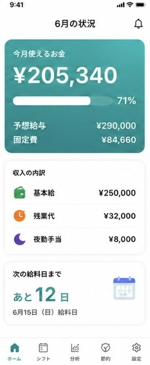
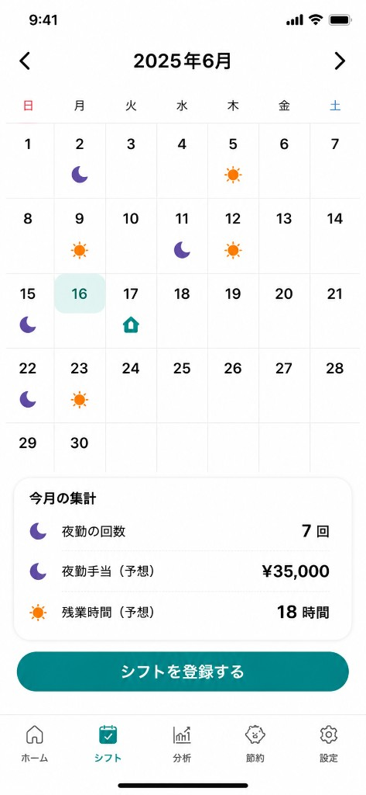
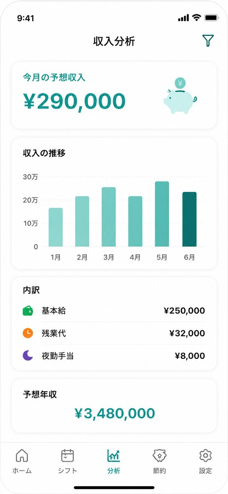
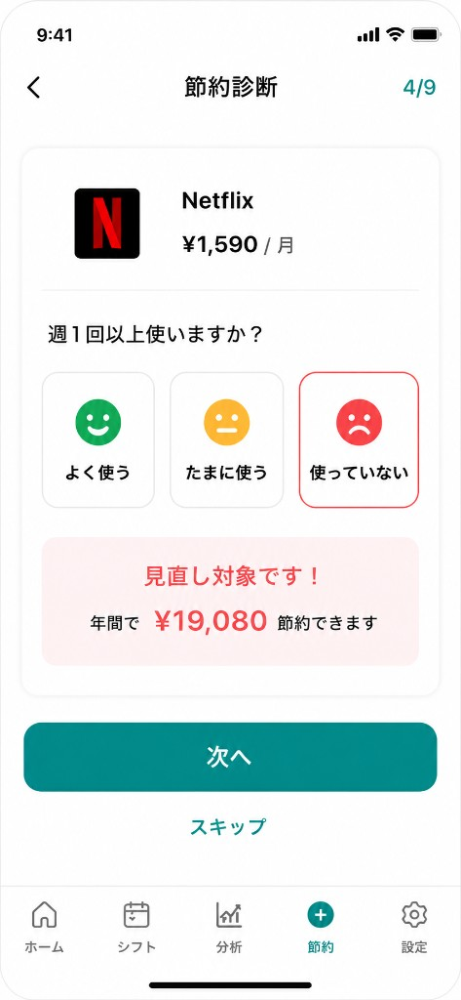
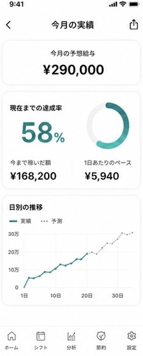

ホーム
今月使えるお金がひと目でわかる
ホーム、シフト、収入分析、節約診断、今月の実績

今月使えるお金がひと目でわかる

日勤 夜勤 残業

月別の推移と内訳を確認

サブスクの見直し候補をチェック

達成率と日別のペースをリアルタイム表示。実績と予測を並べて、月末までの見通しを確認できます。
今月使えるお金がひと目でわかる
日勤 夜勤 残業
月別の推移と内訳を確認
サブスクの見直し候補をチェック
達成率と日別のペースをリアルタイム表示。実績と予測を並べて、月末までの見通しを確認できます。
今月「使えるお金」の表示
家計簿
勤怠
給料メーター
シフトカレンダー ×
夜勤手当の予想
家計簿
勤怠
△ 打刻のみ
給料メーター
サブスク「本当に必要？」診断
家計簿
△ 一覧のみ
勤怠
給料メーター
年間節約額の自動計算
家計簿
勤怠
給料メーター
| できること | 一般的な家計簿 | 勤怠・シフトアプリ | 給料メーター |
|---|---|---|---|
| 今月「使えるお金」の表示 | |||
| シフトカレンダー × 夜勤手当の予想 | △ 打刻のみ | ||
| サブスク「本当に必要？」診断 | △ 一覧のみ | ||
| 年間節約額の自動計算 |
日勤・夜勤・休みをカレンダーに登録するだけで、夜勤回数・手当・残業の見込みを自動集計。
収入分析やホーム画面に自動で反映されます。
日勤・夜勤・休みをカレンダーに登録するだけで、今月の夜勤回数・夜勤手当（予想）・残業時間の見込みを自動集計。収入分析とホームの「使えるお金」に反映されます。
今月の夜勤（シフト画面の集計より）
7回
夜勤手当（予想）（シフト画面の集計より）
¥35,000
残業見込み（シフト画面の集計より）
12時間
登録したサブスクを1つずつ確認。「週1回以上使いますか？」に答えるだけ。使っていないものは見直し候補として、年間節約額をその場で表示します。 登録したサブスクを1つずつ確認。「週1回以上使いますか？」に、よく使う・たまに・使っていないで答えるだけ。使っていないものは見直し候補として、年間の節約額をその場で表示します。
例：Netflix ¥1,590/月 × 使っていない
見直し候補 — 年間 ¥19,080 節約の見込み
給与計算、シフト、節約診断、給料日カウントダウンまで対応 給与計算からシフト・節約診断、給料日カウントダウンまで
基本給・残業代・夜勤手当を自動計算
家賃・光熱費・サブスクをまとめて管理
固定費を引いた「本当に使えるお金」
日勤・夜勤・残業をアイコンで登録し手当と連動
サブスクの利用頻度チェックと年間節約額
次の給料日まで自動カウント
基本機能は無料でご利用いただけます。データ保存・収入予測などの高度な機能は有料プランで。
¥300/月
¥500/月
公開時にいち早くお知らせします。登録は30秒で完了。
無料で事前登録する →登録情報はリリース通知のみに使用します。